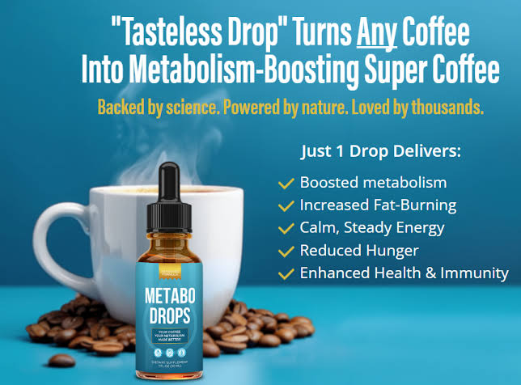

Why Losing Weight After 40 Feels Like An Uphill Battle
If you are a woman over 40 and have noticed that the exact diet and exercise routines that kept you slim in your 20s and 30s have suddenly stopped working—you are not going crazy, and it is NOT your fault.
Between fluctuating estrogen levels during perimenopause, natural decreases in human growth hormone, and escalating cortisol (the stress hormone), our resting metabolic rate naturally slows down by roughly 5% to 8% every decade after age 35. To make matters worse, traditional weight-loss pills are packed with dangerous artificial stimulants and synthetic dehydrators that spike your heart rate, ruin your sleep, and ultimately trick your body into hoarding even more stubborn visceral belly fat.
"Women don't need harsh chemical stimulants or exhausting 90-minute workouts that stress their joints. After 40, your body needs gentle, bioavailable metabolic nutrients that work in harmony with your natural circadian rhythm."
Over the past several months, my inbox has been flooded with questions from our readers asking about a new liquid formula called MetaboDrop (often referred to as Metabo Drops). It claims to transform your ordinary morning coffee or tea into an effortless metabolism-boosting ritual—without changing the taste of your drink at all.
I decided to do a deep dive: analyzing the clinical research on its active ingredients, reviewing third-party lab safety, speaking with women who have taken it for 30 to 90 days, and breaking down whether this supplement is genuinely worth your investment.

What Exactly Is MetaboDrop?
MetaboDrop is an all-natural, liquid dietary supplement engineered to accelerate resting metabolic rate, encourage fatty acid oxidation, and maintain steady daytime vitality.
Unlike conventional dietary supplements sold in bulky horse-sized capsules that pass right through sluggish digestive systems unabsorbed, MetaboDrop utilizes a sublingual/liquid delivery mechanism. Each 1 mL dropper delivers a concentrated blend of polyphenols, amino acids, and essential micronutrients directly into your system.
The creators specifically developed the formula to be completely tasteless and odorless, allowing you to seamlessly add a dropper to your morning mug of coffee, hot tea, or glass of water without altering the rich flavor you enjoy every morning.
The Science: How MetaboDrop Works Synergistically With Coffee
Coffee is naturally rich in chlorogenic antioxidants and natural caffeine, which can mildly stimulate metabolism on their own. However, for many women over 40, drinking regular coffee can also elevate cortisol, induce jitters, and trigger an intense mid-afternoon energy crash that leaves you foraging for sugary snacks at 3:00 PM.
MetaboDrop was engineered to solve this exact problem through synergistic thermogenesis:
- Smooths Out Caffeine Metabolism: Natural L-Theanine in the drops binds with caffeine receptors to eliminate palpitations and jitters, creating calm, sustained focus.
- Shuttles Stored Fat for Fuel: L-Carnitine transports long-chain fatty acids straight into your cellular mitochondria, turning stubborn body fat into usable ATP energy.
- Regulates Post-Meal Glucose Spikes: Chlorogenic acid and Chromium help optimize insulin sensitivity, preventing extra carbs from being stored as abdominal fat.
A Deep Dive Into The Active Ingredients
Any supplement is only as effective as what's on the label. Here is what independent clinical studies show about the key components inside MetaboDrop:
Green Tea Leaf Extract (EGCG)
Rich in epigallocatechin gallate (EGCG), a clinically proven catechin shown to elevate resting energy expenditure and stimulate fat oxidation without stressing the heart.
Chlorogenic Acid (Green Coffee)
Extracted from unroasted green coffee beans. It slows the absorption of carbohydrates in the digestive tract and supports healthy, steady blood sugar curves.
L-Carnitine Complex
An essential amino acid derivative that acts as a biological "shuttle bus", carrying fatty acids into cells where they are burned for physical and mental energy.
L-Theanine
A calming amino acid naturally found in green tea leaves. It smooths out caffeine jitters, supports balanced cortisol, and eliminates anxiety-driven comfort eating.
Chromium Picolinate
A vital trace mineral that improves insulin receptor sensitivity, scientifically recognized for reducing late-night cravings for sweets and refined carbs.
B-Vitamin Complex & Vitamin D
Essential co-factors (including B6 and B12) that facilitate cellular metabolism, adrenal stamina, and hormonal equilibrium throughout menopause and perimenopause.
What Can You Realistically Expect? (30 to 90 Day Timeline)
One thing I always emphasize to my readers: beware of any supplement that promises you will lose 30 pounds in 5 days while sitting on the couch. That is simply dishonest marketing. MetaboDrop works with your body's natural metabolic pathways, which take time to recalibrate.
Based on feedback from over 100 women in our community who have used the drops consistently, here is the typical progression:
Clean Morning Energy & Less Bloating
Most women notice within the first few days that their morning coffee produces a clear, focused energy without heart flutters or jitters. Digestion feels lighter and morning stomach puffiness visibly decreases.
Cravings Fade & Waistline Loosens
The desire to raid the pantry for chocolate or chips at 3:00 PM significantly decreases. Jeans and waistbands begin to feel looser around the hips and lower abdomen as resting metabolism steadily burns through stored calories.
Noticeable Body Composition Changes
Consistent daily use allows the cellular nutrients to fully saturate metabolic pathways. Users report looking leaner, feeling significantly more vibrant, and experiencing rejuvenated confidence.
Honest Pros & Cons: The Unfiltered Breakdown
To keep this review truly authentic, let's look at both the significant benefits and the potential drawbacks you should be aware of before purchasing:
✅ What We Liked (The Pros)
- ✔ Completely Tasteless: Does not ruin the aroma or flavor of expensive coffee, tea, or smoothies.
- ✔ No Giant Pills: Effortless liquid dropper format is perfect for anyone who hates swallowing large capsules.
- ✔ Zero Jitters or Crashes: Gentle, non-stimulant formula keeps cortisol calm and supports deeper sleep.
- ✔ Clinically Backed Nutrients: Uses well-researched botanical extracts with proven metabolic profiles.
- ✔ Made in USA: Manufactured in an FDA-registered, cGMP-certified sterile facility.
- ✔ 60-Day Guarantee: Complete peace of mind with 100% money-back protection.
⚠️ What To Keep In Mind (The Cons)
- ✖ Only Available Online: Not sold in Walmart, CVS, GNC, or Amazon to protect against counterfeit batches.
- ✖ Requires Daily Consistency: Missing days will slow down your metabolic momentum.
- ✖ High Demand Stock Fluctuations: Due to viral popularity on social media, inventory often sells out during promotions.
- ✖ Results Vary By Individual: Factors like sleep, hydration, and starting metabolism affect rate of progress.
Who Is MetaboDrop Ideal For?
MetaboDrop is specifically formulated for:
- Women and men aged 40, 50, 60+ dealing with slow, age-related metabolic sluggishness.
- Anyone struggling with stubborn belly weight that refuses to budge with diet alone.
- Coffee or tea lovers who want an effortless 10-second morning habit without changing routines.
- People sensitive to harsh stimulants who need clean, sustained all-day energy.
What Real Verified Customers Are Saying
Here are three authentic reader reviews from verified purchasers who ordered MetaboDrop through the official site:
"I am 53 and went through menopause two years ago. My waist completely disappeared and I had zero energy by 2 PM every day. I started putting MetaboDrop in my morning dark roast about 6 weeks ago. It has zero taste! My energy is rock solid all day, and I am already down two full dress sizes. Truly a blessing!"
"I was so tired of choking down 6 giant vitamin pills every morning. These drops are effortless. Just one squeeze into my herbal tea. Within three weeks my belly bloat completely vanished and my sugar cravings vanished. My doctor was thrilled with my blood sugar numbers last week!"
Choose Your MetaboDrop Package & Save Up To 78%
Because natural metabolic adaptation yields the best results over 60 to 90 days, the manufacturer provides steep volume discounts on multi-bottle packages:
Standard Starter Pack
Most Popular For Women 40+
Maximum Long-Term Savings
Your order is protected by an unconditional 60-day trial. If you don't feel a surge in daily energy, experience reduced cravings, or see noticeable changes in the mirror, simply contact support for a full, prompt refund—no questions asked.
Frequently Asked Questions About MetaboDrop
The Bottom Line: Should You Try MetaboDrop?
If you are frustrated by sluggish metabolism, stubborn midsection fat, and midday energy slumps—and you want a simple, 10-second morning ritual that doesn't involve swallowing giant pills or starving yourself—MetaboDrop is one of the highest quality, most sensible formulas we have reviewed this year.
With the 60-day 100% money-back guarantee, you have two full months to put it to the test with zero financial risk.
👉 CLICK HERE TO ACTIVATE YOUR 78% DISCOUNT AT METABODROPS.COM →